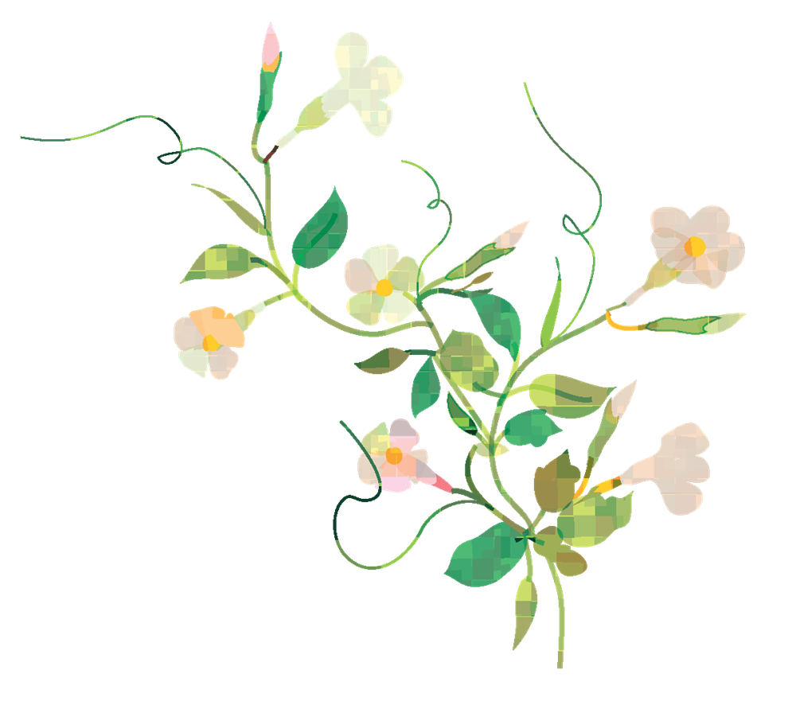

少人数
先生の顔が見える距離
1年次からゼミ形式の授業があり、学生と教員が名前で呼び合える関係を大切にしています。

自分の言葉で考え、自分の足で歩いていく。少人数の学びと、となりで支える教職員とともに、4年間で「わたしの将来」を描いていきます。
「しなやかに、たくましく。」
創立以来、女性が自分らしく社会で生きる力を育ててきました。
山百合女子大学は、女性の高等教育を志した創立者の想いを受け継ぐ大学です。一人ひとりの声に耳をかたむける少人数教育を大切にし、ことば・人・いのちに向き合う学びを通して、変化の大きな時代にも自分で考え、行動できる女性を育てています。
→大学についてもっと知る1年次からゼミ形式の授業があり、学生と教員が名前で呼び合える関係を大切にしています。
「自ら学び、他者とともに生きる」。女性教育の歩みの中で育まれた価値観を、いまの学びにつないでいます。
1年次のキャリア科目から就職・進学の個別面談まで。卒業後の多様な生き方を一緒に考えます。

3学部・7学科。興味の入り口はちがっても、学部をこえて学び合える環境があります。
ACADEMICS日本と世界の文学・言語・文化を、原典を読み、書き、話し合いながら深めます。留学プログラムや翻訳演習など、ことばを「使う」実践の場も豊富です。
心理・教育・福祉の視点から、人の成長と暮らしを支える力を育てます。地域の学校や施設でのフィールドワークを通して、教室の学びを現場で確かめます。
{{ v.quote }}
あなたの強みや学びのスタイルに合わせて、複数の入試制度を用意しています。
模擬授業、学科説明、在学生との個別相談、キャンパスツアー。実際に歩いて、話して、ここでの4年間を感じてください。保護者の方のご参加も歓迎します。
キャンパスで、お会いしましょう。
資料請求は無料です。大学案内と募集要項をお届けします。